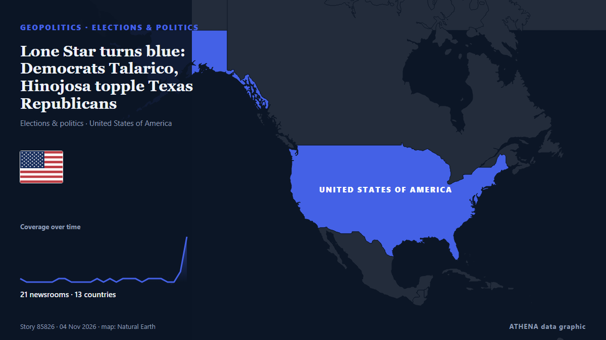

Lone Star turns blue: Democrats Talarico, Hinojosa topple Texas Republicans

Democrat James Talarico, a former schoolteacher and Presbyterian seminarian who campaigned on a “politics of love,” on Tuesday won the US Senate race in Texas, dealing a historic blow to Republicans… de Dawn
Informado de forma independiente por 21 medios de 13 países desde el 31 oct; el primero fue PBS NewsHour; la cobertura está en su punto álgido. ATHENA califica el riesgo como bajo (1.4/10), sobre todo por el ritmo de la cobertura y la gravedad del daño descrito. La confianza es del 88 % (alta): lo corroboran 21 medios independientes, con una fiabilidad media de las fuentes del 72 %. Medios por país: Estados Unidos (11), Irlanda (4), Francia (2). Cobertura: del 31 oct al 4 nov, 81 horas.
Por qué importa: Los hechos de seguridad y diplomacia pueden alterar alianzas, comercio y mercados mucho más allá de los países implicados.
Qué ha cambiado: 20 informaciones nuevas de 17 redacciones en las 24 horas hasta el 4 nov.
Primer titular: Paxton and Talarico tussle for Texas Senate seat as Trump campaigns virtually
Los titulares se muestran en inglés, tal como se publicaron.
De un vistazo
Seleccionado, puntuado y redactado por la metodología publicada de ATHENA. Ningún editor interviene en eventos concretos. Cómo se elabora ›
| 31 Oct 22:14 UTC | 1 |
|---|---|
| 01 Nov 01:14 UTC | 0 |
| 01 Nov 04:14 UTC | 0 |
| 01 Nov 07:14 UTC | 0 |
| 01 Nov 10:14 UTC | 0 |
| 01 Nov 13:14 UTC | 0 |
| 01 Nov 16:14 UTC | 1 |
| 01 Nov 19:14 UTC | 1 |
| 01 Nov 22:14 UTC | 0 |
| 02 Nov 01:14 UTC | 0 |
| 02 Nov 04:14 UTC | 0 |
| 02 Nov 07:14 UTC | 0 |
| 02 Nov 10:14 UTC | 1 |
| 02 Nov 13:14 UTC | 0 |
| 02 Nov 16:14 UTC | 1 |
| 02 Nov 19:14 UTC | 0 |
| 02 Nov 22:14 UTC | 1 |
| 03 Nov 01:14 UTC | 1 |
| 03 Nov 04:14 UTC | 1 |
| 03 Nov 07:14 UTC | 0 |
| 03 Nov 10:14 UTC | 1 |
| 03 Nov 13:14 UTC | 1 |
| 03 Nov 16:14 UTC | 1 |
| 03 Nov 19:14 UTC | 0 |
| 03 Nov 22:14 UTC | 0 |
| 04 Nov 01:14 UTC | 3 |
| 04 Nov 04:14 UTC | 14 |
| 31 Oct 22:35 UTC | 0.0 |
|---|---|
| 01 Nov 18:13 UTC | 2.0 |
| 04 Nov 06:50 UTC | 1.4 |
Por qué estas cifras
Importancia
Riesgo
Confianza
La cobertura: quién informó y cuándo
titular tal como se publicó · abre el original- PBS NewsHour · Estados UnidosPaxton and Talarico tussle for Texas Senate seat as Trump campaigns virtually
- Haaretz (English) · IsraelFor Texas Jewish voters, Israel sharpens the choice between Talarico and Paxton
- TheJournal.ie · IrlandaTexas has voted Republican for decades. This 37-year-old may be about to change that - but it's close
- France 24 English · Francia'A shift in the air': Can young voters turn Texas blue?
- Hyperallergic · Estados UnidosHow Former Theater Kid James Talarico Stands Up for the Arts in Texas
- Sydney Morning Herald · AustraliaAI-generated attack ad shows James Talarico defacing a Bible
- The Hill · Estados UnidosTalarico says he wants to work with Trump on bipartisan MAGA agenda
- Al Jazeera English · CatarTexas Senate candidates Paxton and Talarico make final appeals
- France 24 English · FranciaCould Texas turn blue? Democrat James Talarico takes on Republican establishment
- PBS NewsHour · Estados UnidosLive Results: Texas Senate midterm election
- The Hill · Estados UnidosAbbott: Hinojosa 'makes Talarico look almost conservative'
- Rolling Stone · Estados UnidosTexas Goes Blue: James Talarico Triumphs Over Ken Paxton
- The Hollywood Reporter · Estados UnidosTexas Turns Blue: How James Talarico, Gina Hinojosa Broke Dems’ 36-Year Losing Streak
- The National · Emiratos Árabes UnidosTexas turns blue as Democrats brew historic wins in Congress and governorship races
- NPR · Estados UnidosDemocrat Gina Hinojosa wins race for Texas governor, ousting Greg Abbott
- The Canadian Press (via CityNews) · CanadáDemocrat Gina Hinojosa elected Texas’ first Latina governor, ousts Republican incumbent Greg Abbott
- PBS NewsHour · Estados UnidosDemocrat Gina Hinojosa wins election for governor in Texas
- RNZ National · Nueva ZelandaLive: Both houses of US Congress tipped to go to Democrats
- The Straits Times · SingapurUS midterms: James Talarico notches first Democratic Senate win in Texas since 1994, projections show
- Anadolu Agency (English) · TurquíaTexas Gov. Abbott concedes defeat to Democrat Gina Hinojosa
- Capital FM Kenya · KeniaDemocrats Make Historic Gains in US Midterms, Win Senate and Take Control of Congress
- TheJournal.ie · IrlandaDemocrats pull off unexpected double win in Texas in most expensive Senate race in US history
- RTÉ News · IrlandaDemocrat Hinojosa stuns Texas Governor Abbott in midterms
- Fast Company · Estados UnidosTexas wanted to power America’s AI boom. Its new governor could change everything
- PBS NewsHour · Estados UnidosWATCH: Republican Ken Paxton speaks after losing Texas Senate race
- Stuff · Nueva ZelandaDemocrat turns a Texas Senate seat blue for first time in four decades
- RTÉ News · IrlandaTalarico says 'we defeated Goliath' in US Senate upset
- Dawn · PakistánLone Star turns blue: Democrats Talarico, Hinojosa topple Texas Republicans